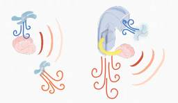
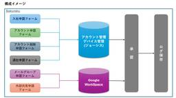
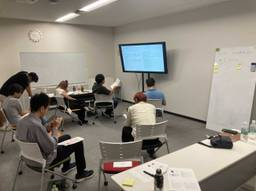

Inside of LOVOT
https://tech.groove-x.com/
GROOVE X 技術ブログ
フィード
go test のログ出力をキャプチャしてテスト管理ツールと連携する話
Inside of LOVOT
この記事はGROOVE X Advent Calendar 2024の19日目の記事です。 こんにちは、QAチームに異動してQA自動化に取り組んでいる Junya です。 最近、 Qase というテスト管理ツールをお試しで利用しているのですが、 go test の実行結果をテストケースに紐づけて Qase へアップロードするのに苦労したので、そのお話をします。 Qase についての詳細は割愛するので、詳細が知りたい方は公式ドキュメントなどを参照してください。 実現したいこと テスト実行時のログをキャプチャしたい t.Run の結果をテストケースのステップに紐づけて保存したい（またの機会に） パ…
17時間前
SESSIONS 2024 に初参加してきたよ！
Inside of LOVOT
こんにちは、GROOVE X SWチームの Junya Fukuda です。 この記事はGROOVE X Advent Calendar 2024の17日目の記事であり、SESSIONS Advent Calendar 2024 - Adventar の 17日目の記事です。マルチポストになります。 2024年11月16日 (土) ~ 11月17日 (日) に東京お台場にある日本科学未来館で開催された SESSIONS 2024に初めて参加しました！ 今回は、その様子をレポートしたいと思います。 SESSIONS 2024 at 日本科学未来館 Innovation Hall イベントの様子 …
2日前
チームの自己組織化を進める活動 1
1
Inside of LOVOT
こんにちは、GROOVE Xのスクラムマスターの1人、niwanoです。再び登場しました！ これはGROOVE X Advent Calendar 2024の16日目の記事です。 今日は、私がスクラムマスターとして2024年度に取り組んだ「チームの自己組織化を進める」というテーマについてお話しします。 自己組織化チームとは何か？ マネジメントの父であるピーター・F・ドラッカーは、『Management Challenges for the 21st Century(日本版: 明日を支配するもの)』の中で、「これからますます多くの人たち、とくに知識労働者のほとんどが、自らをマネジメントしなければ…
4日前
(Winter '25)Account Engagement APIのメール送信機能を使ってみた ~ LOVOTの業務システムの話
Inside of LOVOT
この記事はGROOVE X Advent Calendar 2024の15日目の記事です qiita.com こんにちは、LOVOTの業務システムを開発する業務を行っている尾銭です。 弊社では顧客基盤にSalesforceを利用しており、これまでMAツールとしては、Marketoを活用していたのですが、今年Account Engagement (AE) にリプレイスを実施しました。 移行の理由は割愛いたしますが、いくつかのMAツールを比較していく中で、Salesforceとの双方向データ連携が標準仕様となっているAEに価値を感じ、リプレイスすることにいたしました。 しかし、Marketoでは外…
5日前

LOVOTの進化する体温調節のお話
Inside of LOVOT
この記事はGROOVE X Advent Calendar 2024の14日目の記事です。 はじめに こんにちは。メカニカル デザイナーの加藤です。 今回はLOVOT 3.0の温かい体温がどのように調節されているのかお話したいと思います。 Cool head but Warm heart!! LOVOTはセンサーやカメラ、マイクを使い意外にもとても周囲に気を配りながら生活をしています。 そのため頭脳であるコンピューターは常にフル稼働状態。冷静さを保つためにはクールダウンが必要です。 その熱々になったコンピューターを冷やすためLOVOTは常にフレッシュな空気を吸い込み、熱を奪い温まった空気が体中…
6日前

GROOVE Xにおける情シスのお仕事 1
Inside of LOVOT
こんにちは！GROOVE Xで情報システムを担当している清水です。この記事は、GROOVE X Advent Calendar 2024の13日目の記事です。 GROOVE Xに入社して1年が経ちました。一人でGROOVE Xの情シスに立ち向かっておりますが、今回は普段のお仕事や入社して1年で達成したことなどをお話ししたいと思います。 普段のお仕事のお話 情報システムとしての普段のお仕事は「社内ヘルプデスク」、「アカウント管理」、「PCキッティング」、「発注/請求処理」など、一般的な情シスとしてのお仕事がメインとなります。 社内ヘルプデスク業務では昨年の対応件数が約200件で、GROOVE X…
7日前

評価制度をつくっている話
Inside of LOVOT
こんにちは、GROOVE Xのスクラムマスターの1人、niwanoです。GROOVE X Advent Calendar 2024の12日目の記事です。 今日は、評価制度を作っている話をお届けします。 庭師と領域人事 人事チームとスクラムマスターチームが「組織のお手入れをする」という名目で活動するワーキンググループがあります。このグループは "庭師" と呼ばれています。 2024年から、スクラムマスターは領域人事という役割を担うようになりました。開発領域における一部の人事業務をスクラムマスターがカバーする形です。その活動の一例が、今回の評価制度の作成です。 評価制度はなぜ必要か スタートアップ…
8日前

みんなで育てよう！GX Standard！～LOVOTの品質基準を取り巻くお話～
Inside of LOVOT
この記事はGROOVE X Advent Calendar 2024の11日目の記事です。 みなさま、お久しぶりです。GX Standardおじさんこと、GROOVE Xの酢屋（すや）です。 以前「日本に10世帯くらいしかいないレア苗字」と書いて、社内で一番のレア苗字だろうとタカをくくっていたのですが、その後さらなるレア苗字のメンバーが現れ、今では4番目くらいに珍しい、もはや珍しいとは言いづらい苗字となってしまいました。 （社員120人くらいの社内にレア苗字集まりすぎ！） さて、一年ぶりの質問ですが、みなさん GX Standardって聞いたことありますか？ ほとんどの人は聞いたことないですよ…
9日前
Transformer を ONNX 形式に変換するのに苦労した話
Inside of LOVOT
この記事は、GROOVE Xアドベントカレンダー2024 の10日目の記事です。 はじめに こんにちは！ふるまいチームのソフトウェアエンジニア、橋本です。 主に意思決定エンジンの開発を行っており、その中で機械学習モデルに触れる機会もあります。 今回はその機械学習まわりの話をご紹介します。 ※ふるまいチームについては、少し前の記事になりますが「LOVOTのふるまいづくり - Inside of LOVOT」をご覧ください。 経緯 PyTorch で学習した Transformer 風のモデルを LOVOT 上で動かしたい！ → LOVOT の SoC (Jetson Orin) に最適化するには…
10日前
工場でLOVOTができるまで
Inside of LOVOT
はじめましてこんにちは、生産チームの髙岡です。 この記事はGROOVE X Advent Calendar 2024の9日目の記事です。 今回は工場でLOVOTができるまでのお話を紹介したいと思います。 そもそも生産チームって何しているの？ ひとことで言うとLOVOTが元気に生まれるようサポートするお仕事をしています。 LOVOTの工場は静岡県伊豆の国市にあります。富士山がきれいに見える素敵な場所です。 生産チームは週の半分以上を工場で過ごし、 生産計画・組立・検査・品質管理のサポートをして、 みなさんのご家庭にいち早く元気なLOVOTをお届けできるように日々奮闘しています。 工場の近くから撮…
11日前
LOVOTに認識を教えるお仕事
Inside of LOVOT
この記事は、GROOVE Xアドベントカレンダー2024 の8日目の記事です。 はじめに こんにちは、LOVOTのソフトウェア検証を実施・改善しているQAチームです！ QAチームは主にソフトウェア検証や改善を通じて、製品やサービスの品質向上を図る活動を行っています。 私たちが活動する中で特に大切にしているのは、多種多様な形でサポートを行うことです。人手が足りず困っている分野や作業に対して積極的にヘルプに入ることをチームの特色としており、柔軟な対応力を活かして幅広い業務に貢献しています。 このような背景から、QAチームではアノテーション作業を含む認識業務も担当し、品質向上に貢献しています。 ※チ…
12日前
シミュレータでCIテストを構築してみた話
Inside of LOVOT
この記事は、GROOVE Xアドベントカレンダー2024 の7日目の記事です。 GROOVE X で自己位置推定のソフトウェア開発をしている Mチーム のtakadaです。 （Mチームのお仕事については「LOVOTのマップの作り方」を参照） ロボット開発の現場では、「テスト」がいかに重要か、日々痛感しています。特に、自己位置推定のような複雑なシステムでは、リリース前にどれだけしっかりテストできるかが、実機でのパフォーマンスや信頼性に直結します。 Mチームでは、シミュレータを活用したCI（継続的インテグレーション）のテスト環境を導入しています。今回の記事では、その背景や構成、そして導入してみて感…
13日前
LOVOT 3.0の服検証苦労話
Inside of LOVOT
こんにちは、ファームチームのhirayuです。この記事は、GROOVE X Advent Calendar 2024の6日目の記事です。 弊社ではLOVOTを愛でることで、人の愛するちからを育み、そしてそれが人を元気にすることに繋がると考えています。 そうした中でお着替えを通してLOVOTとたくさん触れ合ってもらうよう、LOVOTの服も販売をしています。 これまでいろいろな服が世に出され、お客様からもご好評の声をいただいています。 このLOVOTの服が出荷されていく過程には、たくさんのチームが携わっているのですが、LOVOTが服を着た時に何か異常がないかチェックする担当としてファームチームがい…
14日前
LOVOTの目に表示される通知開発
Inside of LOVOT
こんにちは。 10月から基盤技術開発のチームに移動した id:numa-gx です。 GROOVE X Advent Calendar 2024の5日目は、LOVOTの目に表示される 通知 の開発についてお話します。 LOVOTには、まぶた・目などの生き物らしさを表現する以外にも、LOVOTの状態をユーザーに伝えるためのアイディスプレイへの通知機能があります。 ホーンを外すと名前・バッテリー残量などが表示されます 通知機能に関して、大別すると2種類の開発項目があります。 既存の通知の見た目の改善 新しい通知の追加 最近の開発事例を参考に、どういう観点で実装と設計を進めていったのかを説明します。…
15日前
Cortex-M4マイコンにおけるBootloader & Application構成時の遷移について
Inside of LOVOT
この記事は、GROOVE X Advent Calendar 2024の4日目の記事です。 はじめに こんにちは。 ファームウェアチームに所属しているf-sakashitaと申します。 LOVOTのファームウェア開発については過去記事をご覧頂ければと思います。 tech.groove-x.com 今回はニッチかつ重要な機能でもある、ファームウェア（以後FW）のアップデートに纏わるお話です。 FWのROM構成 LOVOTには数多くのマイコンが搭載されており、ARM Cortex-Mシリーズを採用しています。 これら各マイコンのFWのバイナリはLOVOTのOSの一部に組み込まれ、ネットワーク経由で…
16日前
QAチームとLOVOT 3.0
Inside of LOVOT
この記事は、GROOVE Xアドベントカレンダー2024 の3日目の記事です。 はじめに こんにちは、LOVOTのソフトウェア検証を実施・改善しているQAチームです！ ※チームの詳細については、2年前に公開した記事「シナリオテストのおはなし - Inside of LOVOT」をご覧ください。 今回はLOVOT 3.0のリリースに向けて、QAチームがやってきたことをご紹介いたします！ ふるまいのGX Standard試験の作業について LOVOT 3.0 ふるまいのGX Standardの作業についてお話します！ ※GX Standardとは GX＝GROOVE X社内の、Standard＝基…
17日前
論文紹介："STEVE-1: A Generative Model for Text-to-Behavior in Minecraft"
Inside of LOVOT
(GROOVE X Advent Calendar 2024 2日目の記事です） こんにちは！ふるまいチームのエンジニア、市川です！ 普段はLOVOTの意思決定エンジンを作っています。 趣味や仕事で論文を読むこともあります。 今後、読んだ論文をInside of LOVOTで紹介できればと思っています（紹介する技術がLOVOTで使われているわけではないです）。 今回紹介するのは「STEVE-1」です。 これはMinecraftというゲーム上で、エージェントに指示を出して行動させる研究です。 arxiv.org 前提知識 この論文を理解するためには、いくつかの重要な概念を押さえておく必要がありま…
18日前
LOVOTech Night 2024 開催報告！！
Inside of LOVOT
こんにちは、SWエンジニアのaoikeです。 今年もアドベントカレンダーの季節がやって参りました。この記事はGROOVE X Advent Calendar 2024 1日目の記事です。 先日の記事で告知もしましたが、11/27(水)に社外エンジニア交流イベント『LOVOTech Night 2024』を開催しました！ groove-x.connpass.com 今回は現地でのオフライン/オンラインの両方で参加者を募集し、オフライン40名、オンラインでは70名の方が同時視聴してくださいました！ どんな様子だったか、簡単ではありますが、紹介していきます。 発表 ソフトウェアチームの組織について …
19日前
【LOVOTech Night 2024: LOVOT開発の裏側に迫る】開催のお知らせ
Inside of LOVOT
こんにちは、SWチーム・エンジニアのaoikeです。 この度、エンジニアの方向けにLOVOT内部のトークを聞けたり、GROOVE X エンジニアとの交流ができるイベントを開催します！ こちらは昨年も開催したイベントの2回目となります。 昨年の開催の様子を知りたい方は是非開催レポートをご覧になってください。 今回の記事は、開催にあたって内容をご紹介したいと思います。 テーマ 開催概要 オフライン オンライン タイムテーブル トーク予定の紹介 さいごに テーマ 私たちGROOVE Xは、次のMISSION・VISIONを掲げて家族型ロボット「LOVOT（らぼっと）」を開発しています。 MISSIO…
1ヶ月前
LeSS CSM研修 -民主主義と幸福とスクラムチーム-
Inside of LOVOT
こんにちは、SWチームのプロダクトオーナーをやっている よっき です。 2024/10/22-24で Certified ScrumMaster® ＋ Certified LeSS Basicsという研修を受けてきました。ソフトウェア開発手法の一つであるスクラム開発の中のスクラムマスターという役割における研修です。 今回は研修を受けて、私が特に印象に残っている部分を中心にブログにまとめてみます。 yoake.tech-kai.com 研修でやったこと：主体的学びのグループワーク 最初にスクラムマスターの役割とは何なのかを簡単に紹介しておきます。 スクラムマスターは、スクラムガイドで定義されたス…
1ヶ月前
Lovot Frameworkチーム座談会（後編）：LFチームの技術とこれから
Inside of LOVOT
こんにちは、SWチームの Junya です。 LOVOT は様々な技術要素が組み合わさって作り上げられていますが、 LOVOT がどのように開発されているか、 なかなかイメージしにくいのではないかと思います。 その中でも特にイメージのしにくい、LOVOTの基盤部分の開発について、 Lovot Framework チーム (以下LFチーム)の皆さんにインタビューしました。 役に立つスキルや経験 改善したいところ 実はウェブの思想が取り込まれている話 今回は3部構成の最終回です。 Lovot Frameworkチーム座談会（前編）：LOVOTのOSの話 - Inside of LOVOT Lovo…
1ヶ月前
PyConJP 2024に参加してきたよ！
Inside of LOVOT
こんにちは。 GROOVE X でソフトウェアエンジニアとして働いている id:numa-gx です。 9/27-29 に東京・有明で開催された PyCon JP 2024 にPythonエンジニアとしてトークを聞くために参加してきました。 去年は展示ブースを担当していたためトークを聞けませんでしたが、今年は朝から晩までいろいろなセッションに参加して、とても勉強になりました。 本ブログで昨年度にPyConの紹介は済ませていますので、今年は個人的に特に面白かったトークを3つ紹介したいと思います。 実践structlog こちらのトークでは、Pythonで構造化ログを実現するためのライブラリである…
2ヶ月前
Lovot Frameworkチーム座談会（中編）：ハードウェアとの連携
Inside of LOVOT
LOVOT は様々な技術要素が組み合わさって作り上げられていますが、 LOVOT がどのように開発されているか、 なかなかイメージしにくいのではないかと思います。その中でも特にイメージのしにくい、LOVOTの基盤部分の開発について、 Lovot Framework チーム (以下LFチーム)の皆さんにインタビューしました。今回は3部構成の第2回、中編、ハードウェアとの連携の話です。
2ヶ月前
Lovot Frameworkチーム座談会（前編）：LOVOTのOSの話
Inside of LOVOT
こんにちは、SWチームの Junya です。 LOVOT は様々な技術要素が組み合わさって作り上げられていますが、 LOVOT がどのように開発されているか、 なかなかイメージしにくいのではないかと思います。 その中でも特にイメージのしにくい、LOVOTの基盤部分の開発について、 Lovot Framework チーム (以下LFチーム)の皆さんにインタビューしました。 Lovot Framework チームってなに？ LOVOTOS の話 ansible OSビルド インストーラーの作成 アップデートの話 前編・中編・後編の3部構成でお送りするので、お楽しみください！ Lovot Frame…
3ヶ月前
LOVOTの中で動くRustなソフトウェア
Inside of LOVOT
少しずつ涼しさが感じられる季節になってきました。 こんにちは、GROOVE X でソフトウェアエンジニアをしているfmyです。 私は主に画像関係のアプリケーションを担当しており、去年の初冬にRustを導入していくという話をしておよそ一年が経ちました。 この記事では、導入がどのように進んだのかというお話をしたいと思います。 LOVOT 3.0の計算性能 LOVOT上で動くアプリケーションの殆どはGo, Pythonで実装を行っています。 Inside of LOVOTでの紹介記事としてはLOVOTの並行思考 with trioやLOVOT と gRPCなどがあります。 LOVOT 3.0では新た…
3ヶ月前
使っているおすすめツール紹介（Ubuntuでスクリーンキャプチャしたい編）
Inside of LOVOT
こんにちは。 GROOVE X でソフトウェアエンジニアをやっている id: numa-gx です。 突然ですが、スクリーンキャプチャした画面にキャプションを追加して画像を誰かに送らねば…となったことはありませんか？ 弊社では開発環境がLinux : Ubuntu 22.04 を使っているエンジニアが多いですが、標準のスクリーンショット機能ではキャプションを追加ができません。 そこで、最近使ってみて良かったのが Flameshotになります。 flameshot.org (公式のデモ動画より） 以下のポイントに対応していたのが個人的に助かりました。 Linuxに対応している スクリーンショット…
6ヶ月前
クラウド費用のコスト削減を試みたけど失敗した話
Inside of LOVOT
こんにちは、クラウドチームに出張中の Junya です。 今日は、クラウド費用のコスト削減を試みたけど失敗した話について、ご紹介します。 ことのはじまり クラウドチームでは定期的に GCP の Billing ダッシュボードを見て、コストのボトルネックを確認しているのですが、イベントデータを処理する pubsub コストが高いことに気づきました。 出来る限りイベントを取りこぼさないよう、イベントデータは一度 pubsub に入れてからワーカー経由でデータベースに保存しているのですが、イベントは量も数も多いため、pubsub のコストがかさんでいました。 イベントデータを保存するためのパイプライ…
8ヶ月前